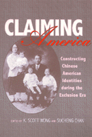

A collection of essays that recovers the lives and experiences of individuals who staked their claim to Chinese American identity
A collection of essays that recovers the lives and experiences of individuals who staked their claim to Chinese American identity


 A collection of essays that recovers the lives and experiences of individuals who staked their claim to Chinese American identity
A collection of essays that recovers the lives and experiences of individuals who staked their claim to Chinese American identity

|  |
Claiming AmericaConstructing Chinese American Identities during the Exclusion Eraedited by K. Scott Wong and Sucheng Chanpaper EAN: 978-1-56639-576-2 (ISBN: 1-56639-576-3) |
Book Award from the Association for Asian American Studies, 2001
This collection of essays centers on the formation of an ethnic identity among Chinese Americans during the period when immigration was halted. The first section emphasizes the attempts by immigrant Chinese to assert their intention of becoming Americans and to defend the few rights they had as resident aliens. Highlighting such individuals as Yung Wing, an ardent advocate of American social and political ideals, and Wong Chin Foo, one of the first activists for Chinese citizenship and voting rights, these essays speak eloquently about the early struggles in the Americanization movement.
The second section shows how children of the immigrants developed a sense of themselves as having a distinct identity as Chinese-Americans. For this generation, many of the opportunities available to other immigrants' children were simply inaccessible. In some districts explicit policies kept Chinese children in segregated schools; in many workplaces discriminatory practices kept them from being hired or from advancing beyond the lowest positions. In the 1930s, in fact, some Chinese-Americans felt their only option was to emigrate to China, where they could find jobs better matched to their abilities. Many young Chinese women who were eager to take advantage of the educational and work options opening to women in the wider U.S. society first had to overcome their family's opposition and then racism. As the personal testimonies and historical biographies eloquently attest, these young people deeply felt the contradictions between Chinese and American ways; but they also saw themselves as having to balance the demands of the two cultures rather than as having to choose between them.
Excerpt available at www.temple.edu/tempress
"Drawing extensively on the historical records left by those who lived through the years of the Chinese Exclusion Acts, the authors of this volume cogently argue that Chinese Americans made determined efforts to claim a place in American society even in the most hostile years of the exclusion era.... Claiming America has contributed significantly to Chinese American history in many ways."
—The Journal of American History
Preface
Part I. The Immigrant Generation
1. Cultural Defenders and Brokers: Chinese Responses to the Anti-Chinese Movement – K. Scott Wong
2. The Origins of the Chinese Americanization Movement: Wong Chin Foo and the Chinese Equal Rights League – Quingsong Zhang
3."Exercise Your Sacred Rights": The Experience of New York's Chinese Laundrymen in Practicing Democracy – Renqiu Yu
Part II. The American-born Generations
4. Fighting for Their American Rights: A History of the Chinese American Citizens Alliance – Sue Fawn Chung
5. Race, Ethnic Culture, and Gender in the Construction of Identities among Second-Generation Chinese Americans, 1880s to 1930s – Sucheng Chan
6. "Go West . . . to China": Chinese American Identity in the 1930s – Gloria Chun
7. The "Oriental Problem" in America, 1920-1960: Linking the Identities of Chinese and Japanese American Intellectuals – Henry Yu
About the Contributors
 | K. Scott Wong is Associate Professor of History at Williams College in Williamstown, MA. He is co-editor of Privileging Positions: The Sites of Asian American Studies. |
Sucheng Chan is Professor of Asian-American Studies at the University of California, Santa Barbara. She is editor or co-editor of several books including Entry Denied: Exclusion and the Chinese Community in America, 1882-1943 (Temple), Peoples of Color in the American West, Hmong Means Free: Life in Laos and America (Temple), Major Problems in California History, and many others.
Contributors: Gloria H. Chun, Sue Fawn Chung, Henry Yu, Renqiu Yu, Qingsong Zhang, and the editors.
Asian American Studies
History
Asian American History and Culture, edited by K. Scott Wong, Linda Trinh Võ, and Cathy Schlund-Vials.
Founded by Sucheng Chan in 1991, the Asian American History and Culture, series has sponsored innovative scholarship that has redefined, expanded, and advanced the field of Asian American studies while strengthening its links to related areas of scholarly inquiry and engaged critique. Like the field from which it emerged, the series remains rooted in the social sciences and humanities, encompassing multiple regions, formations, communities, and identities. Extending the vision of founding editor Sucheng Chan and emeriti editor Michael Omi and David Palumbo-Liu, series editors K. Scott Wong, Linda Trinh Võ, and Cathy Schlund-Vials continue to develop a foundational collection that embodies a range of theoretical and methodological approaches to Asian American studies.
© 2015 Temple University. All Rights Reserved. This page: http://www.temple.edu/tempress/titles/1332_reg.html.